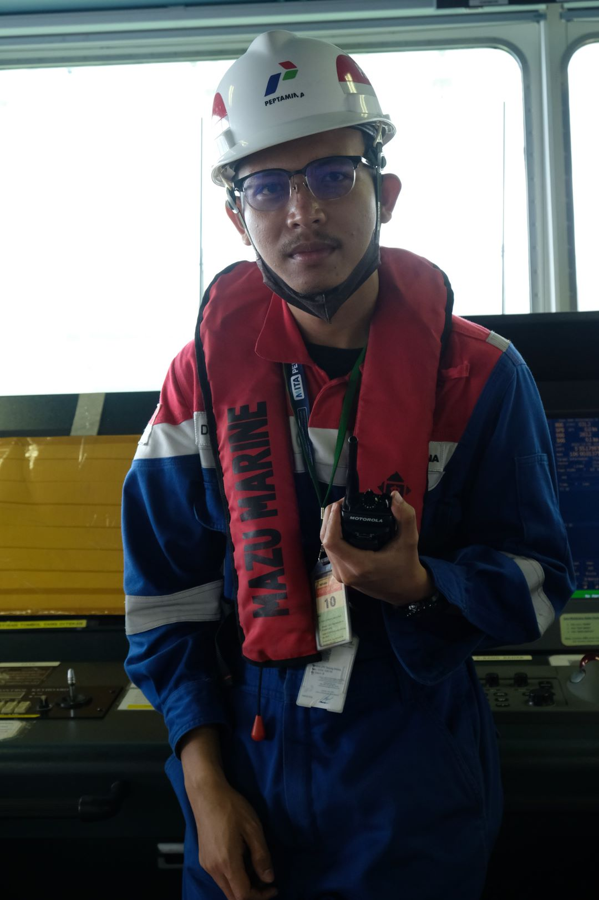
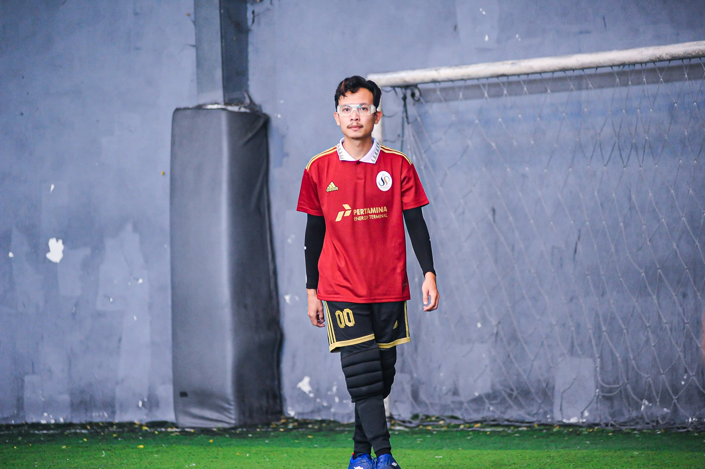
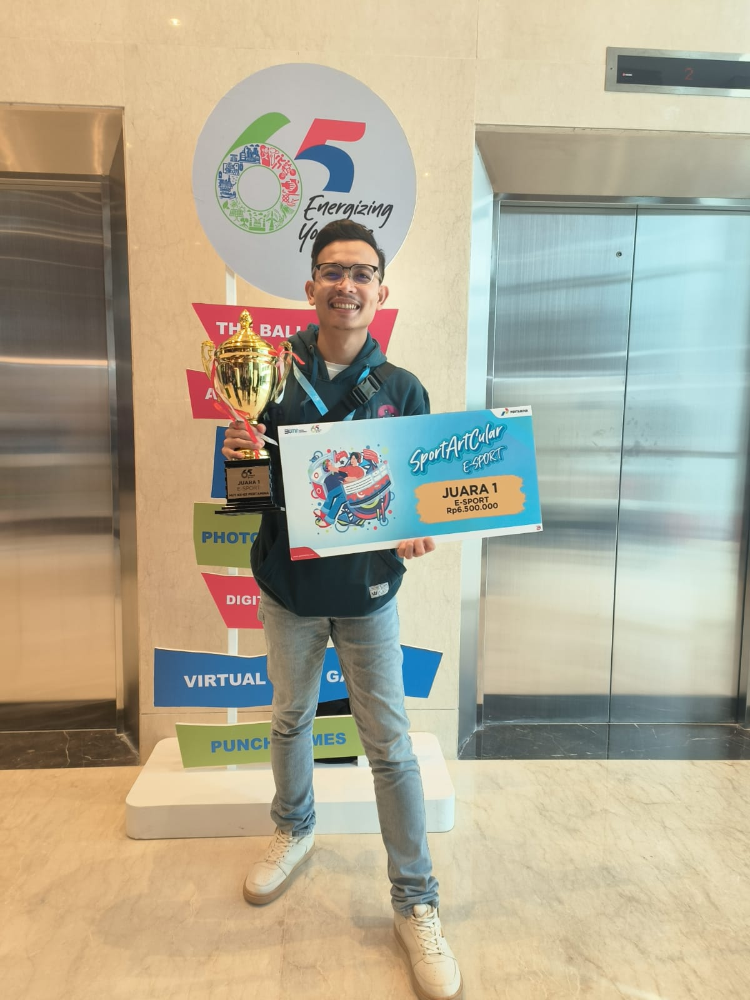

About Me
Saya adalah seorang profesional yang berdedikasi dan memiliki pengalaman di bidang Electrical & Utilities serta Administrasi. Saya memiliki kemampuan untuk melakukan Analisa serta maintenance terhadap suatu peralatan dan selalu berusaha untuk memberikan hasil terbaik dalam setiap pekerjaan yang saya lakukan. Dalam perjalanan karir saya, saya telah bekerja pada berbagai proyek yang menantang dan berhasil mencapai berbagai pencapaian signifikan. Saya memiliki semangat belajar yang tinggi dan selalu mencari peluang untuk meningkatkan keahlian saya serta memberikan kontribusi positif kepada organisasi yang saya ikuti. Saya juga memiliki hobi dalam bidang E-Sport dan juga Olahraga Futsal.
Data Pribadi:
- Nama: Denny Septa Chrisanda
- Tempat, Tanggal Lahir: Kalianda, 22 September 1997
- Program Studi: PJJ- Informatika
- NIM: 230401010360
- Agama: Islam
- Warga Negara: Indonesia
- Alamat: Jalan Rawa Bebek RT:002 RW:001 Kel. Pulogebang Kec.Cakung Kota. Jakarta Timur
- E-mail: dsepta322@gmail.com
Sosial Media:
Experience
| Position | Location | Duration |
|---|---|---|
| Administrator Distribution Verification | Balongan | 2016 - 2017 |
| Administrator Sales & General Adm. | Tanjung Sekong | 2017 - 2019 |
| Jr. Spv LPG Sales & General Affairs | Jakarta | 2019 - 2021 |
| Jr. Spv Utilities & Processing | Tanjung Sekong | 2021 - 2024 |
Education
- SDN Cakung Timur 08 - 2004-2009
- SMP Negeri 234 Jakarta - 2009-2012
- SMK Negeri 4 Jakarta - Teknik Pemesinan - 2012-2015
Training
- BKJT Pemasaran 2015
- Basic HSSE Mandatory Training
- Microsoft 365
- First Aider Lv 2
My Gallery


